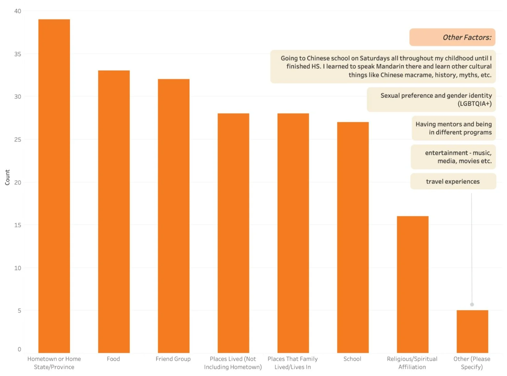
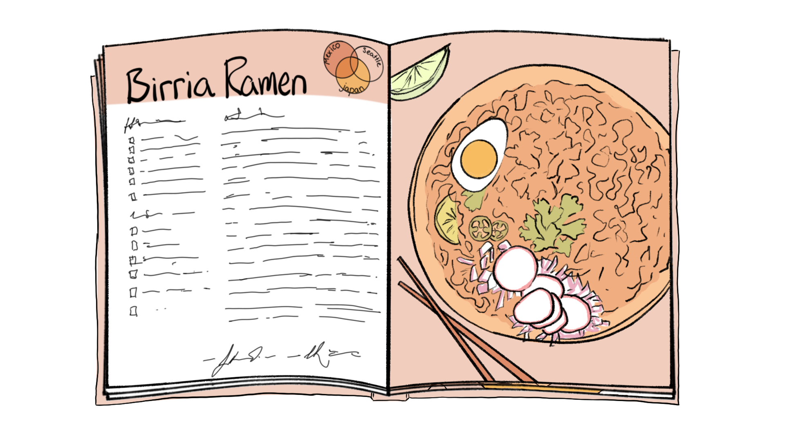
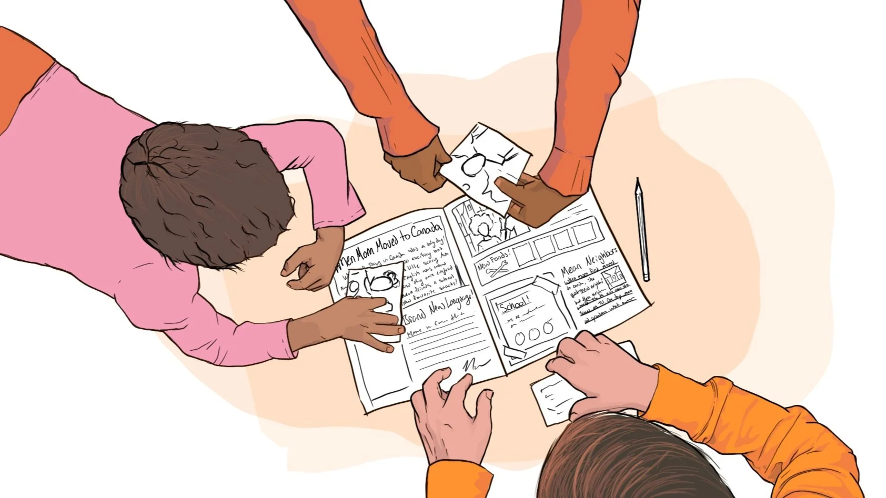
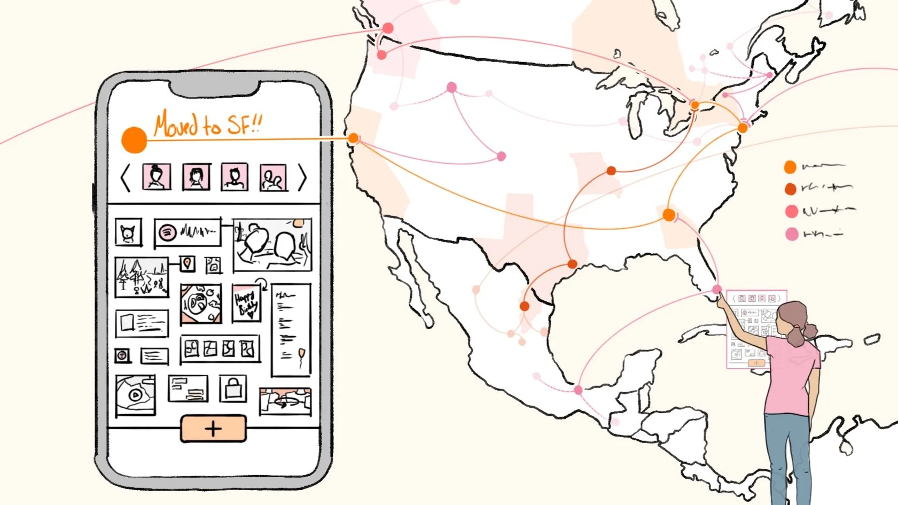
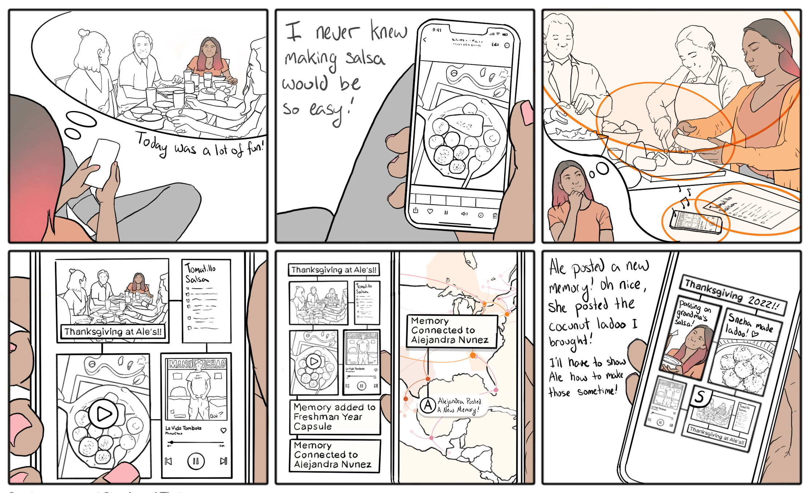
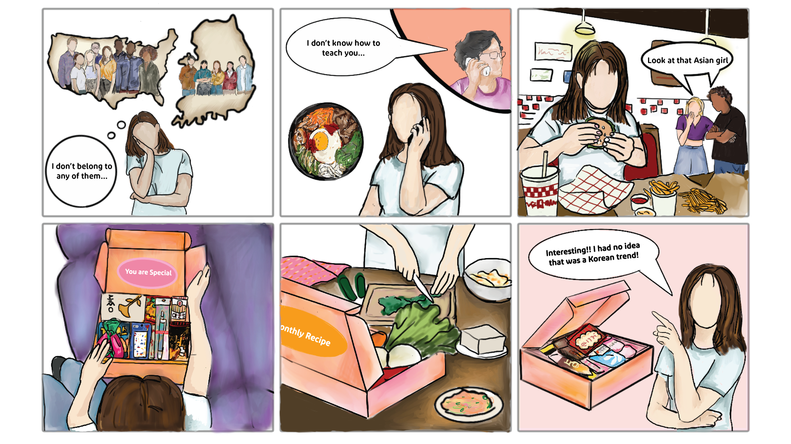
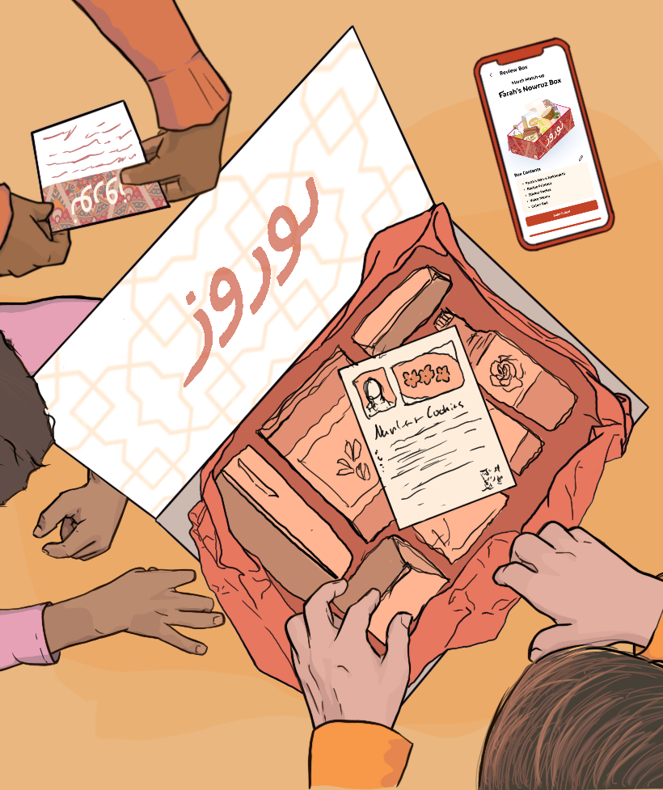

Capsule
Target Population
Cultural nomads with fractured cultural identities, who lack a sense of belonging in any established culture.
Traits: Young adults, 18-35 years old, who are descended from immigrants to the U.S., have multifaceted cultural identities, and varying degrees of comfort in the intersection of cultures.
Problem Space
As a multicultural nation, the US houses a large immigrant population with diverse cultures, religions, and traditions. However, due to the effects of assimilation, those unique cultural aspects may fade out over time. As a result, American-born descendants of immigrants can feel disconnected from their family's heritage. Simultaneously, their cultural identity may also be informed by the cultures of the places and people that surround them, leaving these individuals with multifaceted cultural identities. While some embrace their amalgamated identity, others may feel as though they do not truly belong in any established culture.
The Goal
Facilitate cultural reconnection for cultural nomads, to enable them to create stronger ties to the cultures that have impacted them and embrace their amalgamated cultural identity as an authentic representation of themselves.
Research
Questions
- What factors shape cultural identity?
- How do people connect to culture?
- How do cultural nomads relate food to culture & self-identity?
Methods
For this project, we used surveys and one-on-one interviews to collect the necessary data. Interviews took place in person, and were recorded and later transcribed. The transcripts were then analyzed using qualitative coding, resulting in a codebook. The survey was created in Qualtrics and distributed on social media. Survey answers were turned into charts in Tableau. For the survey's open-ended text answers, the same codebook from interviews was applied.
Findings
Through survey and interview data, we found that many individuals relate to the issue of cultural disconnection and are interested in connecting more with their cultures. Regardless of generational proximity to immigration and despite some individuals feeling slightly connected to their culture, the interest in cultural connection was strong across this range of individuals.
Our findings also revealed that cultural identity is formed by factors beyond ethnocultural background. This can be positive experiences, such as connecting to the cultures of close friends and significant others. These factors can also be negative: we found that growing up in an area where the dominant culture differs from one's own can lead to rejection/embarrassment of one's culture.
Lastly, findings showed that food is a common way that people connect to cultures and that traditional foods often represent family, celebrations, and the comfort of home, while fusion foods - made by the individual or their family - reflect that individual's multicultural identity.

Data Samples: Survey results to “What beyond ethnicity and immigration have shaped your cultural identity?”
“Hungarian kifli! My family has been in the US for three generations, but my great-grandmother's recipe has been passed down. I have vivid memories (both good and bad) of making kifli with my mother during the winter holidays.”
“Tomato noodle soup. It's a big bowl of comfort that my mom makes incorporating both Chinese cooking techniques with Western ingredients. Kind of like me.”
Design Requirements
Accurately Represent the User's Identity, Along All Dimensions
Preserve the Stories and Context of Personal Fusion Foods and Family-tradition Foods
Guard Against the Commodification of Ethnicity and Culture
Facilitate Cultural Exchange Between Individuals
Building on our finding that cultural connection is first established through loved ones and areas of upbringing, our design must facilitate cultural exchange that begins with a personal connection to another individual.
When describing foods, survey respondents engaged in storytelling to convey a dish's importance. Similarly, our design must preserve the stories and context of recipes, to convey their significance. The phrasing of "personal fusion foods and family-tradition foods" recognizes that a dish's importance is not rooted in its proximity to broad traditions, but rather in the fact that it is an authentic cultural artifact of oneself or one's family.
Our research revealed that cultural identity is formed by many factors beyond ethnocultural background(s). In order to effectively connect people to their cultures, the many factors that impact cultural identity need to be represented in the design's understanding of the user's identity.
In expanding the standard definition of cultural identity, we must be intentional in how we safeguard against cultural appropriation and commodification. "Facilitate Cultural Exchange Between Individuals" ensures that users' cultural exchanges are rooted in a connection to another individual, preventing superficial connections to culture. "Preserve the Stories and Context of Personal Fusion Foods and Family-Tradition Foods" reinforces the tie between a recipe and its story and its author, not allowing the three to be separated, thus maintaining foods' ownership and context.
Concept Ideation
Boxtie

Boxtie allows users to select a box based on a culture from the user's multicultural background that they would like to learn more about.
Fusion Cookbook

Fusion Cookbook takes in a person's unique mix of cultures and returns a cookbook of fusion food recipes based on the user's multicultural identity.
Learning Buddy

This concept pairs a stuffed animal with an app, both used to teach kids with multicultural backgrounds about their cultures.
Memoiry

Memoiry is a storytelling activity for parents and children to do together, aiming to enable families to share and discuss their history and provide a relatable storybook to multicultural children who may not see themselves represented in typical children's books.
Capsule

Users digitally collect important artifacts (such as photos, videos, letters, recipes, and songs) related to core memories of a specific moment in their lives. Users assign the capsule to a place, "leaving" it there to be discovered by their future selves, their loved ones, or strangers near the geolocation.
Design Development
Based on our design requirements, our team moved forward with design development. We held several rounds of Crazy8s, and iterated off of each other's sketches. These sketches were then refined, resulting in the following 10 concepts.
Storyboards
Capsule

Capsule builds on the metaphor of a time capsule, which represents significant moments in one's life and is often buried with the intent of later rediscovery. Users digitally collect important artifacts, such as photos, videos, letters, recipes, and songs, to represent a specific moment in their lives, such as important moves or life transitions. Users then can assign the time capsule to a place, "leaving" it there to be discovered by their future selves, their loved ones, or strangers near the geolocation.
Boxtie

Each month, Boxtie allows users to select a culture from the user's own background that they would like to learn more about. Boxes have different themes, such as a goodie box containing items from your cultural heritage or a recipe box to teach traditional or fusion recipes. Boxtie also connects users with cultural overlaps, helping the two prepare boxes for each other during special times of the year, allowing them to learn how their culture is practiced in different parts of the world.
Process — We presented our two storyboard concepts - Boxtie and Capsule - to a panel of peers, which was instrumental in our decision to ultimately pursue the Boxtie concept. The panel discussion included many valuable thoughts and feedback, including encouragement to focus boxes on holidays and festivals, questions on the price of a service such as this, and appreciation for how this service mitigates the pain point of having to seek out specific ingredients.
With further team discussion, we incorporated some aspects of Capsule, such as its reflective nature and privacy features, in the ideas of Boxtie. We also ultimately decided that the word "capsule" better represented the idea of the boxes created in Boxtie, leading us to rename the concept to "Capsule".
Capsule

Capsule is a subscription service that offers users the opportunity to connect to cultures by receiving boxes from other users that contain personal cultural recipes, goodies, and stories.
Prototype
Capsule users create a cultural profile - which takes in information on their background and cultural connections - and allows users to learn more about these cultures, or the cultures of new friends they match with through Capsule. Boxes and recipes are created by users and shared with other users with their consent. When users receive a box, they experience a moment of cultural immersion, through the stories and foods that are shared with them.
Users primarily receive a box through Box Exchanges or Box Exchange Events. Box Exchanges pair up two users based on cultural profiles, who will then exchange boxes that they create for each other. Boxes can contain a user's recipe or snacks and goodies that they wish to share. Boxes are accompanied by special touches by the user to share why the items in their box are important, allowing users to learn each other's stories. Similar to traditional pen pals, this service facilitates cultural exchange between two individuals.
Box Exchange Events are times of the year when users are encouraged to participate in box exchanges, with themes around holidays. Events can have special goodies that come with them and specially designed patterns for holidays.
Beyond boxes, users can upload their own recipes to the platform, expand or update their cultural profile, and create a diary of reflections on the cultural experiences facilitated through Capsule.

Onboarding: Signing Up for Capsule
When a user first downloads Capsule, they are met with a series of introductory slides which explain what Capsule is and three core steps: creating a cultural profile, exchanging boxes with others, and experiencing culture through the foods and stories that Capsule presents. They are then directed to the onboarding questionnaire, which begins by asking them about their interest in cultural connection, their ethnic heritage, and the cultures and places that have had a significant impact on them.

The required portion of the survey ends with a question about dietary preferences, after which the user can decide to have the system create their cultural profile or answer more questions. If the user wants their cultural profile to be more specific, they have the option to expand on their cultural profile later on, whenever they desire to do so.
Box Exchange: Creating a Box for Another User and Receiving a Box
In our prototype, Capsule has a Box Exchange Event, March Match-Up, that the user signs up for. Capsule presents the user with a range of holidays/festivals that occur in March. Our example user decides to make their box about Nowruz, Persian New Year, and includes their recipe for Nan-e Nokhodchi from their existing recipes on the platform. A brief tutorial appears to explain the swiping mechanism that allows users to add or remove ingredients - auto-populated from the recipe - to their box. The user adds ingredients, stickers, and a recipe printout to the box, and records a voice memo to accompany the box. After a few changes to the box's pattern, the user reviews and submits their box.
After submitting, the user is matched up with a user they have not interacted with before but has cultural overlap with. Our example user is matched with a New Zealander of Maori descent who has lived in India for a significant amount of time. For March Match-Up, this example user has created a Rēwena Parāoa Recipe Box.
Reflection
New Skills — This project allowed me to gain experience in research methods such as literature review, qualitative coding, and data analysis, as well as better learn tools such as Qualtrics, Tableau, and Figma, in conjunction with tools I am experienced with, such as Procreate and Adobe Creative Suite.
Test, Test, Test Our Surveys — While we had many iterations of our survey before it was released to the public, there were still questions that, upon reflection, could have been worded better or included more suitable options. In the future, I will give more weight to testing a survey.
Cultural Appreciation and Appropriation — Our project focuses on the delicate subject of cultural identity, and found that cultural identity is formed by factors beyond one's ethnocultural background. This expanding definition can open the door to cultural appropriation and commodification, if not handled correctly, an issue that we felt was important to address at each stage in this project. The next step in this conversation would be on recipe and story ownership, and users' desires around privacy, authorship, and sharing.